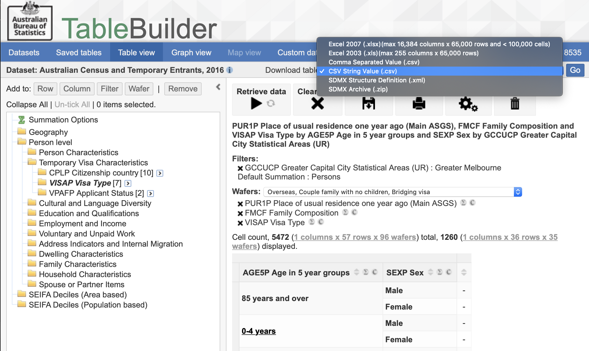

The goal of abs is to provide a function to read csv tables downloaded from ABS TableBuilder without having to ‘tidy’ them first. Thus, this helps ti retain the meta information of the tables.
Table Builder
Currently, The package only works with Table Builder files downloaded as “CSV String Value (.csv)”, as shown in the image below.

Installation
You can install the development version of abs from GitHub with:
remotes::install_github("asiripanich/abs")Example
The main function is abs_read_tb() which let you read in a TableBuilder file downloaded as “CSV String Value (.csv)” into a tidy data by ignoring all its metadata.
library(abs)
data_dir <- system.file("extdata", package = "abs")
test_csv <- file.path(data_dir, "tb1.csv")
mytable <- abs_read_tb(test_csv, .names = "simplify", exclude_total = TRUE)
#> Warning in fread(x, skip = which(has_count), header = FALSE): Stopped early on
#> line 20. Expected 3 fields but found 0. Consider fill=TRUE and comment.char=.
#> First discarded non-empty line: <<"Data Source: Census of Population and
#> Housing, 2011, TableBuilder">>
mytable
#> counting cacf count
#> 1: Families, Place of Usual Residence One child in family 16.0922299
#> 2: Families, Place of Usual Residence Two children in family 15.1560423
#> 3: Families, Place of Usual Residence Three children in family 5.8328819
#> 4: Families, Place of Usual Residence Four children in family 1.5950983
#> 5: Families, Place of Usual Residence Five children in family 0.3659169
#> 6: Families, Place of Usual Residence Six or more children in family 0.1763784
#> 7: Families, Place of Usual Residence Not applicable 60.7814864Note that abs_read_tb returns a data.table object. To convert it back to data.frame simply use as.data.frame().